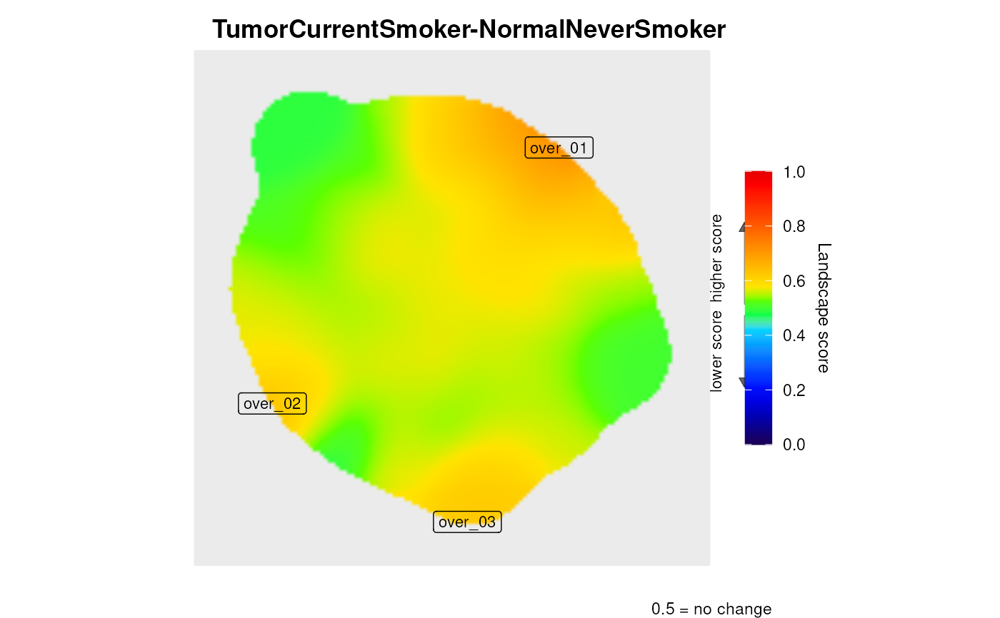

Writes the interactive surface returned by levi (field
plot3d) to a file, optionally after setting the camera position, so
that a figure can be reproduced from the same angle in every run. The
format is taken from the file extension.
leviSave3D(
x,
file,
camera = NULL,
width = 1600,
height = 1200,
scale = 2,
selfcontained = TRUE,
compression = "LZW"
)A levi_result produced with plot3d = TRUE, or a
plotly object such as result$plot3d.
Output path. Supported extensions: html (interactive,
keeps the view and can still be rotated), png, jpeg,
jpg, webp, svg, pdf (static, written by
plotly::save_image, which requires the Python packages
kaleido and plotly) and tiff/tif (rendered as PNG and converted
with the magick package).
Optional camera specification, a list with any of
eye, center and up, each a list with x,
y and z. eye is the camera position relative to the
centre of the surface; larger values move it away. NULL keeps the
camera already stored in the plot (plotly's default view otherwise).
Image size in pixels for static formats.
Resolution multiplier for static raster formats.
Logical; for html, embed all dependencies in a
single file. Requires pandoc, and is turned off automatically when pandoc
is not available.
TIFF compression passed to magick::image_write;
"LZW" by default.
The path of the written file, invisibly.
Static export goes through plotly::save_image, which drives
a headless browser via the kaleido and plotly Python
packages. Install them once with
reticulate::py_install(c("kaleido", "plotly")). On this route a
1600 x 1200 export at scale 2 takes about ten seconds. Without them, save the HTML
and use the camera icon of the plotly toolbar in a browser, or convert a
PNG exported that way with magick::image_write.
res <- levi(expressionInput = system.file("extdata", "expression.dat",
package = "levi"),
fileTypeInput = "dat",
networkCoordinatesInput = system.file("extdata", "medusa.dat",
package = "levi"),
geneSymbolInput = "ID",
readExpColumn = readExpColumn("TumorCurrentSmoker-NormalNeverSmoker"),
plot3d = TRUE)
#> There are 1 nodes without expression value, see log in path: /tmp/Rtmpdj301T/TumorCurrentSmoker-NormalNeverSmoker/levi.log

cam <- list(eye = list(x = 1.6, y = -1.6, z = 0.9))
html <- tempfile(fileext = ".html")
leviSave3D(res, html, camera = cam, selfcontained = FALSE)
file.exists(html)
#> [1] TRUE
# \donttest{
# Static formats need the kaleido and plotly Python packages
leviSave3D(res, tempfile(fileext = ".png"), camera = cam)
#> Downloading uv...
#> Done!
#> Error: Static export needs the Python package(s) 'kaleido' and 'plotly'. Install once with reticulate::py_install(c('kaleido', 'plotly')), or save as .html and use the camera icon of the plotly toolbar.
leviSave3D(res, tempfile(fileext = ".tiff"), camera = cam) # also magick
#> Error: Static export needs the Python package(s) 'kaleido' and 'plotly'. Install once with reticulate::py_install(c('kaleido', 'plotly')), or save as .html and use the camera icon of the plotly toolbar.
# }